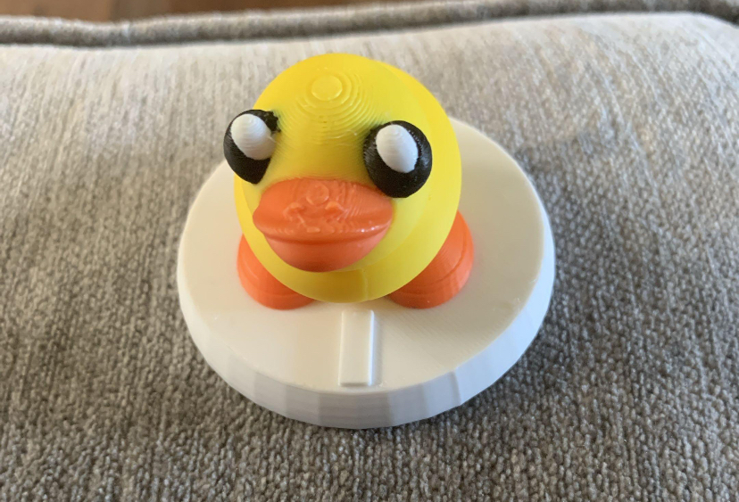
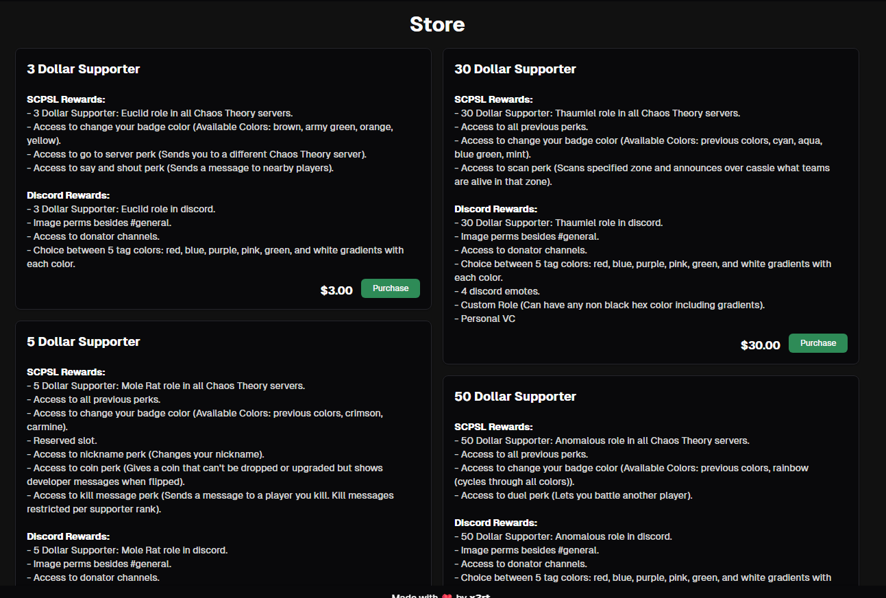
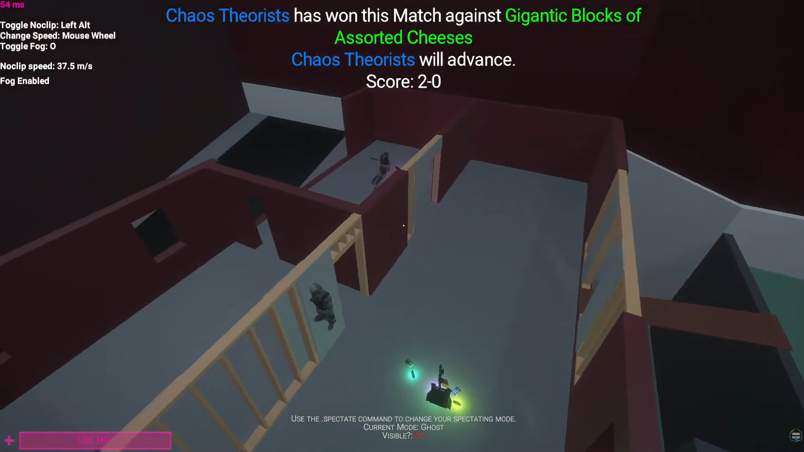
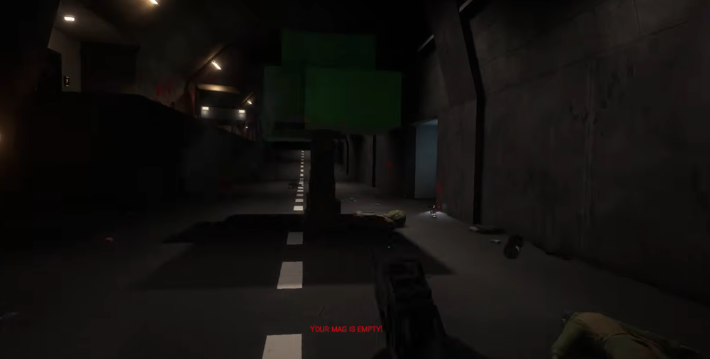
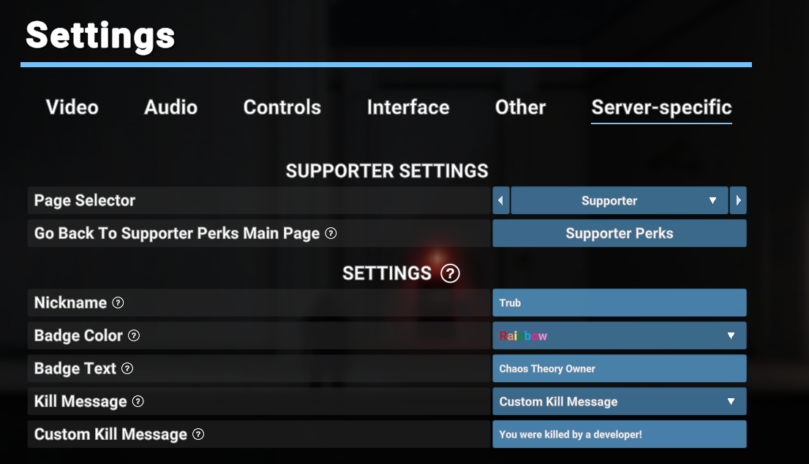

Overview
At Chaos Theory I am the Founder and Project Manager that makes sure everything runs smoothly.
I manage the many different teams that I have set up to delegate tasks to like: the moderation team
responsible for keeping the servers safe, the QA Testers which test upcoming plugin updates and
confirm bugs, the Wiki Team that keeps information on our wiki up to date, the Content Team who
creates trailers, clip complications, and guides, and most importantly the development team which
is responsible for maintaining and creating new plugins for the server. The development team is
the team I am most hands on where I lead creating new experiences for players and review the code
quality made by other team members. I am also responsible for organizing tasks for my team to do
and explaining them in ways that are easy for them to break apart.
Chaos Theory has an active player base of 20,000+ users making it one of the most popular SCPSL
servers. Our discord server has 12,000+ people in it. We are featured in many popular content
creatures videos and are fully self-sustaining and profitable.
Achievements
Merch
We made 3d printed merch of ducks which is a spawnable on our server and successfully sold them to community members. They also came with individualized duck cards with names, descriptions, and personality traits that I hand customized. The card has a QR code that can be used to register the duck into our database for future abilities to have perks in game for it. The community submitted pictures of their ducks that we compiled into a video compilation.

Full VideoSelf Sustaining
We are completely self-sustaining through our supporter perks that we have integrated on our website. We take in over 2,000 dollars every month which keeps us able to be self-sustaining while paying for the servers and the development team while also turning a profit every month.

Community Tournaments
We have hosted a couple tournaments that have been played entirely by community members signing up with teams. We had turnouts of way more teams than we ever expected. The first tournament we did was very basic and wasn't automated but after that one we realized we needed to do better. So the one after we introduced custom tournament maps and a plugin to automate it. The most recent tournament we also added the ability to choose abilities, and they have to choose a different one each round which really spiced up the gameplay!

Full Tournament StreamApril Fools Update
Every April Fools we release our April Fools update which is usually like a months worth of work for one day of fun, but it is honestly worth it. We add a bunch of wacky stuff like the playable flashbang, playable plant/tree, and the playable car. We also did something that the community thought was impossible, and we teamed up with another popular server and made it so you could teleport between the servers while keeping all your items / stats. This was thought to be impossible since you can't redirect someone to a different ip address on this game, but we were able to do it by using a proxy and some magic. After we got the connecting working we just had to use a TCP server to send information about the player before they got redirected so that they could keep all their, items, roles, and stats. It led to one of the most chaotic and fun days of gaming ever. The April Fools update is one the community always looks forward to enjoying.

2025 April Fools Compilation 2026 April Fools CompilationImportant Updates
Mimicry Rewrite
The 12.0 Mimicry update in early 2023 was a game update early in the servers career when we were using old plugins of another developer. This update thoroughly broke every servers plugins that everyone had to do a mass rewrite of their plugins. At this time we didn't really have funding and back then I didn't know how to code. Faced with my server going down the drain I proceeded in the span of two weeks pulling 12-hour days I learned how to code plugins. This led to the first rewrite of our plugins that also added some new features.
Lab API Rewrite
Since our original rewrite was done when my team of developers didn't really know how to make plugins well it left us with a lot of technical debt. A little over a year ago Northwood released a basegame modding API called LAB API and since we were using a 3rd party modding API that had a lot of faults we decided we would move to LAB API and in the process rewrite all of our plugins from complete scratch. This was a massive undertaking we completely rewrote our role, item, ability, supporter, and spawning apis (and much more). Along with having to rewrite all the systems I also rewrote over 200 custom classes and 100 custom items. During this rewrite we made sure to design for expandability and maintainability and purged all uses of MEC (Call Delays and Coroutines) which were bad practice. We also enforced a very strict code style and public methods documenting with analyzers along with all code (even my own) having to go through comprehensive code reviews before getting merged. It wasn't just a rewrite though, we also added a bunch of reworks and QOL features players wanted and there was over 60 pages of patchnotes.This update took a year to complete, and we only finished it August 2026, but it is one of my most proud feats.
Map API Update
SCPSL is very limited with what we can do with models. We can only make stuff out of primitive shapes. A popular public plugin people use is called Map Editor Reborn which lets you create maps out of primitives in unity and then export it as a json that is then used by the plugin to recreate the map in game. The spawning system in MER though doesn't have a lot of features so we made our own Map API that used MER as a map api but handled spawning itself. This way we were able to add rotating maps and random room variations that MER couldn't do on its own. This added an element of replayability that other servers that had custom maps didn't have.
Full TrailerSupporter Perks Implementation
In order to make the server self-sustaining we had to implement supporter perks. Over time, we were able to make 20 perks over all the tiers that has managed to bring in enough money every month to be self-sustaining and turn a profit. Most of the perks used to be commands but with the Lab API rewrite I added them into a moddable settings page so they could use basic UI elements to use their perks.
